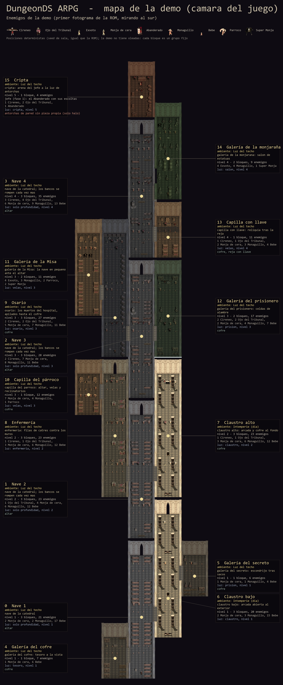
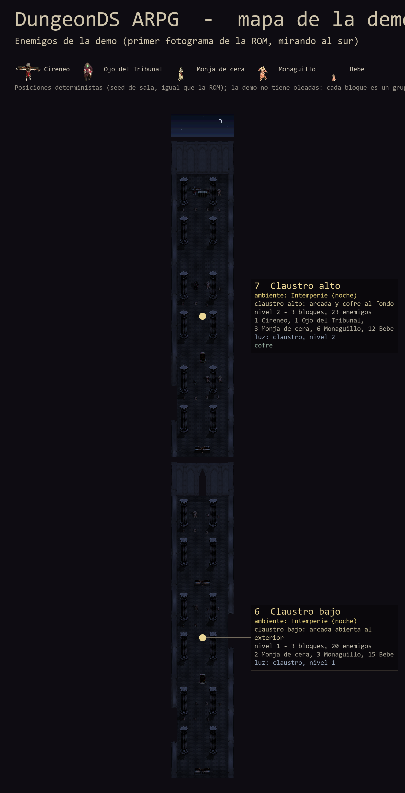
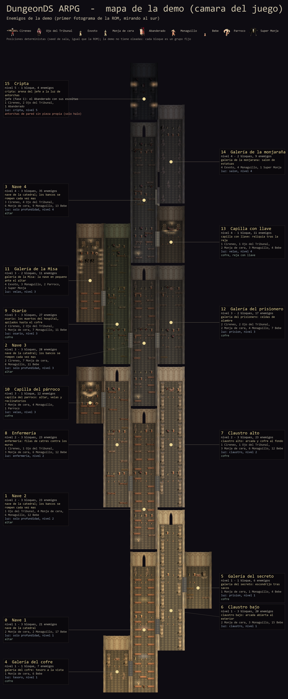
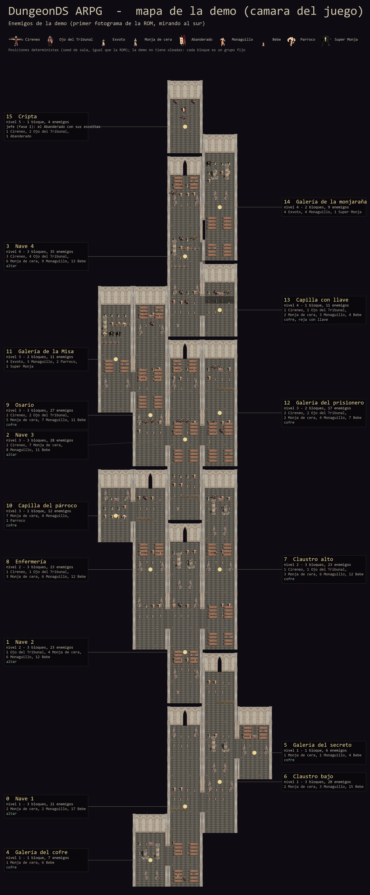
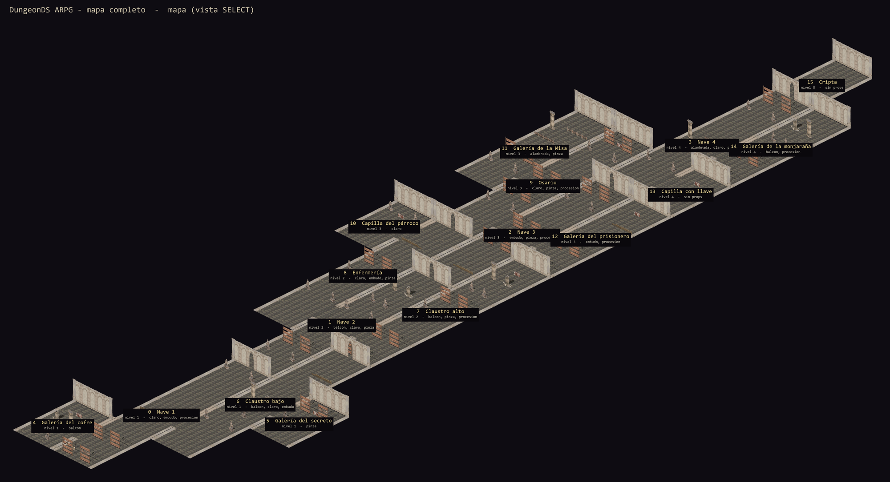

Las 16 salas en su sitio del plano y vistas con la misma cámara del juego: suelo, muros, props, enemigos y héroe son los de la ROM, sin transformar. Cada cartel dice qué hay en la sala; la leyenda de arriba reúne los enemigos.
EnemigosLos que coloca la ROM en cada sala (mismo seed, mismos grupos), en su primer fotograma y mirando al sur. La demo no tiene oleadas: cada bloque lleva un grupo fijo.
SeparaciónCada salto «arriba» sube la sala 160 px para que su muro del fondo no pise la de encima. La galería de la monjaraña sube otros 160 px por el mismo motivo y su paso queda desalineado.
Lo que faltaLas lápidas del juego no se dibujan (dependen del bloque del strip). Los enemigos no se apartan de los props como hace el juego al colocarlos. Detalle de piezas aproximadas en la nota de la v3.

Pellizca o usa la rueda para ampliar; arrastra para moverte. Doble toque: acercar.
Ver la v3 a tamaño real (2648 px)
v3 (arriba): props colocados sala a sala como habitaciones reales; la luz es provisional, solo de ambiente (se cierra sala a sala después).
Naves 1-4Filas de bancos a los dos lados del pasillo; de una nave a la siguiente hay más bancos rotos, volcados y barricadas.
ClaustrosGalería porticada: columnas en fila junto a los muros y el centro abierto. Día y noche.
EnfermeríaCatres con la cabecera contra los muros, biombos, palanganas y candelabros junto a las camas.
OsarioMuros forrados de estanterías de nichos; calaveras y huesos solo como remate.
Capillas y MisaAltar al fondo entre candelabros, reclinatorios en filas mirando al altar, exvotos en los muros.
Galerías del TribunalCofre: cepos y sacos contra los muros. Secreto: capullos tras una barricada de sacos. Prisionero: celdas de alambre con cepos y presos.
MonjarañaSalón de estatuas en fila a los dos muros; capullos cada vez más densos hacia el nido del fondo.
CriptaSarcófagos en fila contra los muros, lápidas entre ellos, braseros a la entrada y el centro libre para el jefe.
Luz provisionalLuz cenital del techo de la catedral con un tono por sala: gris en las naves, ámbar en las capillas, verde enfermizo en el prisionero y la Monjaraña, rojo de brasa en la cripta. Las velas se dibujan pero aún no alumbran.
Lo que faltaTelaraña para la Monjaraña, antorcha de pared para la cripta, reja alta para las celdas, y modelo propio para banco entero, santo, verja y vela (salen con su dibujo del juego). Los claustros de noche sacan reflejos dorados en las columnas.
Claustros de noche
El ciclo día y noche solo existe en los claustros (dentro de la catedral el tiempo está parado).

Pellizca o usa la rueda para ampliar; arrastra para moverte. Doble toque: acercar.
v2: ambientes por función
Ver la v2

Ver la v2 a tamaño real (2648 px)
v1: la ROM tal cual
Para comparar: props al azar de las plantas y sin luz por sala.
Ver la v1

Ver la v1 a tamaño real (2648 px)
Vista del mapa de Select
La versión anterior (opción secundaria, --vista select): las salas con la inclinación del mapa que sale al pulsar Select, sin enemigos.
Ver el póster en vista Select

Referencia: el mapa de Select en la ROM.
v3 · cámara del juego · se regenera con tools/poster/rebuild_poster_arpg.py